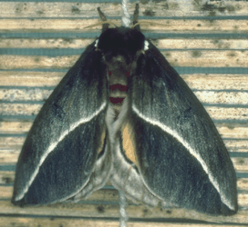
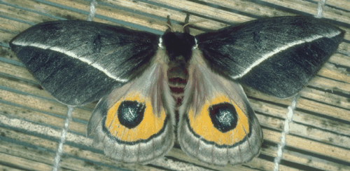

Automeris zephyria
Return to Dominick Home Page

Automeris zephyria is a wild silkmoth from the southwestern United States and northern Mexico. We raised these from eggs, feeding the caterpillar on wild cherry. Note the difference in appearance between wings closed (above) and wings open (below). The similar looking Io moth, Automeris io, is a more commonly known member of this genus and looks quite
